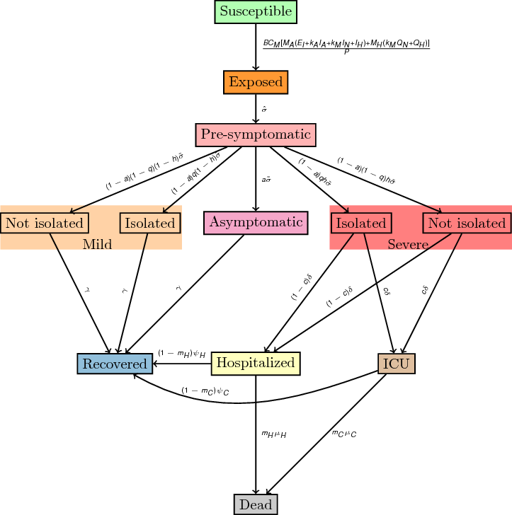

Impact of Red Light Area on Covid-19 in India
2 Methods
We developed an age-structured SEIR-type dynamic model for COVID-19 transmission to understand the impact of continued closure of red light Areas in five cities of India as well as nationally (Figure 1). The population of each location considered is divided into red light areas and general population. Red light area includes sex workers as well as non-sex workers such as pimps, brothel managers, security, servants and other performing miscellaneous roles in the area. General population is rest of the population in the location. Each population is further stratified into four age-groups and compartments (Table 1) based on natural history of disease as well as interventions. For population stratification into four age groups: 0-19, 20-39, 50-64 and 65+ years of age, we apply age-distribution of each location from last census data (ref) to current population estimates for each location (ref) and red light areas within it (ref). After a susceptible individual (\(S\)) acquires infection, they remain in incubation period (\(E\)) for an average of \(1/\sigma = 5.2\) days (Table 2). We assume that a person is not infectious during their incubation period. Following incubation period, an individual either remains asymptomatic (\(I_A\)) or develops symptoms (\(I_N\),\(I_H\)). A proportion of symptomatic individuals (\((1-h)\)) only develop mild symptoms (\(I_N\)). Symptomatic individuals with mild symptoms (\(I_N\),\(Q_N\)) do not need hospitalization and recover on an average of \(1/\gamma\) days. A proportion of individuals (\(f\)) with mild or severe symptoms are isolated within a day (\(I_N\)->\(Q_N\),\(I_H\)->\(Q_H\)). Symptomatic individuals with severe symptoms (\(I_H\),\(Q_H\)) either need just hospitalization(\(H\)) or also need to be in ICU (\(C\)). Those hospitalized (\(H\),\(C\)) either recover or die. Prem et. al (ref) estimated contact patterns between different age-groups in India overall and by different locations such as household. We use this estimate of overall contact pattern in India to inform the contact mixing between different age-groups in our model. Contact mixing of individuals who are isolated (\(Q_N\),\(Q_H\)) is informed by contact patterns for household.

Figure 1: Model Schematic
The force of infection \(\lambda\) is given by
\begin{equation} \lambda = \frac{B C_{M} [ M_{A}(k_{A} I_{A}+k_{M} I_{N}+I_{H})+M_{H}(k_{M}Q_{N}+Q_{H})]}{P} \end{equation}where \(B\) represents matrix representing probability of infection within and between a location and red light area within it. Interaction between general population and red light area occurs through customers and we assume that probability of infection for interaction between general population and red light area is 1. We assume that probability of infection within red light area is same as the probability of infection in general population (\(\beta\)), which is calibrated to basic reproduction number \(R_0\). Thus \(B\) is given by
\begin{equation} B = \begin{bmatrix} \beta & 1 \\ 1 & \beta \end{bmatrix} \end{equation}The connectivity matrix \(C_M\) informs the contact rate \(c_r\) between the general population and red light area calculated as ratio of daily total interaction between general population and red light area and general population. The connectivity matrix \(C_M\) is therefore given by
\begin{equation} C_M = \begin{bmatrix} 1 & c_r \\ c_r & 1 \end{bmatrix} \end{equation}We assume that relative infectiousness of individuals with asymptomatic infections and mild infections are \(k_{A}\) and \(k_{M}\) respectively. The contact pattern between different age-groups are informed by matrices \(M_A\) and \(M_H\) respectively (ref). \(M_A\) represents the overall contact patterns and if individuals are isolated/quarantined in their home (\(Q_N\),\(Q_H\)), we use \(M_H\) matrix that represents the contact patterns at household level.
\begin{equation} M_A = \begin{bmatrix} 14.4405 & 4.9482 & 1.6084 & 0.7058 \\ 4.9482 & 9.2541 & 2.6860 & 0.6868 \\ 1.6084 & 2.6860 & 1.4837 & 0.3820 \\ 0.7058 & 0.6868 & 0.3820 & 0.3252 \end{bmatrix} \end{equation} \begin{equation} M_H = \begin{bmatrix} 2.0309 & 2.0538 & 0.7890 & 0.5312 \\ 2.0538 & 1.3993 & 0.7640 & 0.4330 \\ 0.7890 & 0.7640 & 0.3975 & 0.2051 \\ 0.5312 & 0.4330 & 0.2051 & 0.1434 \end{bmatrix} \end{equation}Data
| Location | Mumbai | Nagpur | Delhi | Kolkata | Pune | India |
|---|---|---|---|---|---|---|
| General population | 20,411,00 | 2,893,000 | 19,500,00 | 14,850,000 | 6,629,000 | 1,380,004,385 |
| Red light area population | 5,471 | 2,310 | 4,048 | 16,000 | 6,345 | 637,500 |
| Total daily interaction between general population and red light area | 441,000 | 252,000 | 777,000 | 2,112,000 | 820,000 | 20,475,000 |
| Contact rate between general population and red light area (\(c_r\)) | 0.0216 | 0.0871 | 0.0398 | 0.1422 | 0.1237 | 0.01484 |
Compartments
| Compartment | Definition |
|---|---|
| \(S\) | Susceptible |
| \(E\) | Incubation |
| \(I_A\) | Asymptomatic infections |
| \(I_H\) | Symptomatic severe infections (not isolated) |
| \(I_N\) | Symptomatic mild infections (not isolated) |
| \(Q_H\) | Symptomatic severe infections (isolated) |
| \(Q_N\) | Symptomatic mild infections (not isolated) |
| \(H\) | Hospitalization |
| \(C\) | Need ICU |
| \(D\) | Deaths |
Parameters
| Parameter | Definition | Value | Reference |
|---|---|---|---|
| \(P\) | Population size | - | |
| \(R_0\) | Reproduction number | 1.75-2.25 | |
| \(\beta\) | Probability of infection | \(f(R_0,M)\) | |
| MA | Contact matrix for general population | - | |
| \(M_H\) | Contact matrix for household | - | |
| \(k_A\) | Relative infectivity of asymptomatic infections | 0.5 | |
| \(k_M\) | Relative infectivity of mild cases | 0.5 | |
| \(1/\sigma\) | Duration of incubation period | 1/5.2 | https://annals.org/aim/fullarticle/2762808/incubation-period-coronavirus-disease-2019-covid-19-from-publicly-reported |
| \(a\) | Proportion of asymptomatic cases | 0.28 | |
| \(h\) | Proportion of severe symptomatic cases | [0.025, 0.32, 0.32, 0.64] | |
| \(q\) | Proportion of symptomatic cases being isolated immediately | 0.05 | Maybe different for mild & severe cases |
| \(\tau\) | Contact tracing rate | 1/2 | 1 for severe cases/2 for mild (right now its 2 for everything) |
| \(f\) | Proportion of symptomatic cases being isolated later | 0.05 | Maybe different for mild & severe cases |
| \(\gamma\) | Recovery rate of mild and asymptomatic cases | 1/(2*(7.5-4)) | |
| \(\delta\) | Hospitalization rate | 1/3.5 | |
| \(c\) | Proportion of symptomatic cases needing ventilators in hospitals | [0.014, 0.042, 0.075, 0.15] | |
| \(m_h\) | Proportion of hospitalized cases that are fatal | 0.2296 | |
| \(m_c\) | Proportion of hospitalized cases needing ventilators that are fatal | 0.1396 | |
| \(\psi_H\) | Recovery rate of hospitalized cases | 1/10 | |
| \(\psi_C\) | Recovery rate of hospitalized cases needing ventilators | 1/13.25 | |
| \(\mu_H\) | Mortality rate of hospitalized cases | 1/9.7 | |
| \(\mu_C\) | Mortality rate of hospitalized cases needing ventilators | 1/7 |
2.1 40 days national lockdown
2.2 Post lockdown
4 Notes
4.1 TODO Things to do
- To do for now
[X]Change age-distributions with relevant states[X]Implement 40 days lockdown[ ]Correct prevalence for cities[X]Create excel sheet of data[ ]Comment codes[-]Methods[-]Model description & parameterization A) [X] Population division B) [X] Age-distribution C) [X] Compartments D) [X] Contact patterns E) [X] Interaction between two population F) [ ] Interventions[ ]Lockdown[ ]
[ ]Compartment Table (Table 1)[ ]Model parameters Table (Table 2)[ ]Model diagram/equations (Figure 1)[ ]Simulation
[ ]Results[ ]Results for each city[ ]Cases averted at peak[ ]Delay in peak[ ]Cases averted linked to RLA[ ]Deaths averted linked to RLA
[ ]National results
- Things to consider
[ ]Remove age-group from Red Light Area[ ]Add customer class explicitly[ ]Include other interventions[ ]Separating different transmission for sex workers vs non-sex workers.